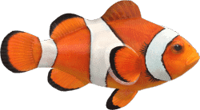
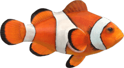

"Embrace the Thrill of"
Exploration

 Explore
Explore


 Explore
Explore


Pterophyllum is a small genus of freshwater fish from the family Cichlidae known to most aquarists as angelfish. All Pterophyllum species originate from the Amazon Basin, Orinoco Basin and various rivers in the Guiana Shield in tropical South America. If you turned an angelfish sideways, its silhouette closely resembles the head, wings and dress of an angel. Their unique shape helps them swim and twirl under water with ease. Their laterally compressed bodies and fanning fins make them appear larger to predators but still allow them to dart into crevices for safety.
The yellow tang, also known as the lemon sailfin, yellow sailfin tang or somber surgeonfish, is a species of marine ray-finned fish belonging to the family Acanthuridae which includes the surgeonfishes, unicornfishes and tangs. It is one of the most popular marine aquarium fish They are also easy to keep and can be part of a community aquarium. Yellow Tang are semi-aggressive, however, so care must be taken to check compatibility with other species, as well as to the order they are added to a tank
The goldfish is a freshwater fish in the family Cyprinidae of order Cypriniformes. It is commonly kept as a pet in indoor aquariums, and is one of the most popular aquarium fish. Goldfish released into the wild have become an invasive pest in parts of North America and Australia.
Goldfish come in a variety of breeds, each with distinct characteristics in terms of color, size, and shape. The most common breed is the Comet Goldfish, known for its long, flowing tail and bright orange color. Fantail Goldfish have a double tail and a more rounded body, giving them a graceful appearance. The Oranda Goldfish is recognized by its prominent head growth, known as a "wen," which adds a unique texture to its appearance. Shubunkin Goldfish are prized for their calico patterns, blending blues, reds, and blacks in a beautiful mosaic. Another breed, the Ranchu, has a stocky body with no dorsal fin, making them distinct from other breeds. Despite their differences, all goldfish require proper care, including clean water and a balanced diet, to thrive.
Leporinus fasciatus, commonly known as the banded leporinus or black-banded leporinus, is a striking species of freshwater fish belonging to the characin family, Anostomidae. This species is easily recognizable by its bold, alternating black and yellow vertical stripes that run along its body, making it a popular choice for aquarists. Native to the vast waterways of the Amazon Basin in South America, L. fasciatus thrives in a variety of river environments. The species has also been introduced to the United States, specifically in Florida and Hawaii, where it has adapted to new habitats. Known for its active behavior, the banded leporinus can grow up to 12 inches (30 cm) in length and is an omnivore, feeding on both plant matter and small aquatic creatures. In captivity, it requires a spacious tank and a varied diet to stay healthy, along with plenty of hiding spots and clean water conditions to mimic its natural environment.
Clownfish or anemonefish are fishes from the subfamily Amphiprioninae in the family Pomacentridae. Thirty species of clownfish are recognized: one in the genus Premnas, while the remaining are in the genus Amphiprion. In the wild, they all form symbiotic mutualisms with sea anemones Clownfish eggs can be hatched anytime during the year. After the clownfish eggs are laid, the male clownfish guard them until they hatch. Clownfish are all born males. ... Though there are theories, it is not yet known how clownfish survive the anemone's poison.


 
